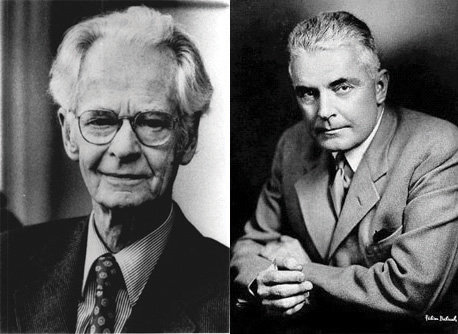

It is a continuous challenge living with post-traumatic stress disorder (PTSD), and I’ve suffered from it for most of my life. I can look back now and gently laugh at all the people who thought I had the perfect life. I was young, beautiful, and talented, but unbeknownst to them, I was terrorized by an undiagnosed debilitating mental illness.
Having been properly diagnosed with PTSD at age 35, I know that there is not one aspect of my life that has gone untouched by this mental illness. My PTSD was triggered by several traumas, most importantly a sexual attack at knifepoint that left me thinking I would die. I would never be the same after that attack. For me there was no safe place in the world, not even my home. I went to the police and filed a report. Rape counselors came to see me while I was in the hospital, but I declined their help, convinced that I didn’t need it. This would be the most damaging decision of my life.
For months after the attack, I couldn’t close my eyes without envisioning the face of my attacker. I suffered horrific flashbacks and nightmares. For four years after the attack I was unable to sleep alone in my house. I obsessively checked windows, doors, and locks. By age 17, I’d suffered my first panic attack. Soon I became unable to leave my apartment for weeks at a time, ending my modeling career abruptly. This just became a way of life. Years passed when I had few or no symptoms at all, and I led what I thought was a fairly normal life, just thinking I had a “panic problem.”
Then another traumatic event retriggered the PTSD. It was as if the past had evaporated, and I was back in the place of my attack, only now I had uncontrollable thoughts of someone entering my house and harming my daughter. I saw violent images every time I closed my eyes. I lost all ability to concentrate or even complete simple tasks. Normally social, I stopped trying to make friends or get involved in my community. I often felt disoriented, forgetting where, or who, I was. I would panic on the freeway and became unable to drive, again ending a career. I felt as if I had completely lost my mind. For a time, I managed to keep it together on the outside, but then I became unable to leave my house again.
Around this time I was diagnosed with PTSD. I cannot express to you the enormous relief I felt when I discovered my condition was real and treatable. I felt safe for the first time in 32 years. Taking medication and undergoing behavioral therapy marked the turning point in my regaining control of my life. I’m rebuilding a satisfying career as an artist, and I am enjoying my life. The world is new to me and not limited by the restrictive vision of anxiety. It amazes me to think back to what my life was like only a year ago, and just how far I’ve come.
For me there is no cure, no final healing. But there are things I can do to ensure that I never have to suffer as I did before being diagnosed with PTSD. I’m no longer at the mercy of my disorder, and I would not be here today had I not had the proper diagnosis and treatment. The most important thing to know is that it’s never too late to seek help. (Philips, 2010)Philips, P. K. (2010). My story of survival: Battling PTSD. Anxiety Disorders Association of America. Retrieved from http://www.adaa.org/living-with-anxiety/personal-stories/my-story-survival-battling-ptsd
The topic of this chapter is learningThe relatively permanent change in knowledge or behavior due to experience.—the relatively permanent change in knowledge or behavior that is the result of experience. Although you might think of learning in terms of what you need to do before an upcoming exam, the knowledge that you take away from your classes, or new skills that you acquire through practice, these changes represent only one component of learning. In fact, learning is a broad topic that is used to explain not only how we acquire new knowledge and behavior but also a wide variety of other psychological processes including the development of both appropriate and inappropriate social behaviors, and even how a person may acquire a debilitating psychological disorder such as PTSD.
Figure 7.1 Watson and Skinner
John B. Watson (right) and B. F. Skinner (left) were champions of the behaviorist school of learning.
Sources: Watson photo courtesy of Amaro Studios, http://www.flickr.com/photos/39584782@N08/4198517298. Skinner photo courtesy of pto0413, http://www.flickr.com/photos/pto0413/4776302017/in/photostream.
Learning is perhaps the most important human capacity. Learning allows us to create effective lives by being able to respond to changes. We learn to avoid touching hot stoves, to find our way home from school, and to remember which people have helped us in the past and which people have been unkind. Without the ability to learn from our experiences, our lives would be remarkably dangerous and inefficient. The principles of learning can also be used to explain a wide variety of social interactions, including social dilemmas in which people make important, and often selfish, decisions about how to behave by calculating the costs and benefits of different outcomes.
The study of learning is closely associated with the behaviorist school of psychology, in which it was seen as an alternative scientific perspective to the failure of introspection. The behaviorists, including John B. Watson and B. F. Skinner, focused their research entirely on behavior, to the exclusion of any kinds of mental processes. For behaviorists, the fundamental aspect of learning is the process of conditioningThe ability to connect stimuli (the changes that occur in our environment) with responses (behaviors or other actions).—the ability to connect stimuli (the changes that occur in the environment) with responses (behaviors or other actions).
But conditioning is just one type of learning. We will also consider other types, including learning through insight, as well as observational learning (also known as modeling). In each case we will see not only what psychologists have learned about the topics but also the important influence that learning has on many aspects of our everyday lives. And we will see that in some cases learning can be maladaptive—for instance, when a person like P. K. Philips continually experiences disruptive memories and emotional responses to a negative event.